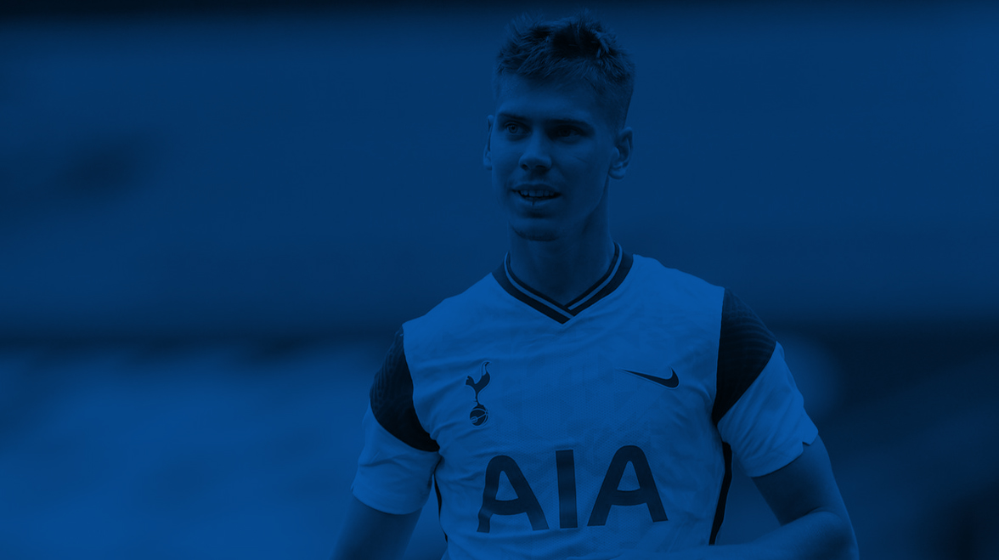

JUAN FOYTH DEIXA
O TOTTENHAM
O TOTTENHAM
 Sexta, 11 de junho de 2021, 11:30
Sexta, 11 de junho de 2021, 11:30 Por Tottenham Hotspur
Por Tottenham HotspurO Tottenham Hotspur Football Club confirma que o Villareal exerceu a opção de compra permanente de Juan Foyth.
O defensor argentino chegou ao Spurs em agosto de 2017 vindo do Estudiantes. Desde a sua chegada Foyth havia feito 32 aparições em jogos oficiais, marcando um gol pelo clube.
Juan estava emprestado ao Villareal desde Setembro de 2020, e atuou 32 vezes com a camisa do Villareal, tanto pela La Liga, quanto pela Europa League, competição esta que foi conquistada pelo seu time.
Nós desejamos à Juan o melhor para o futuro.